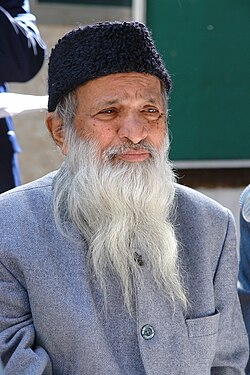
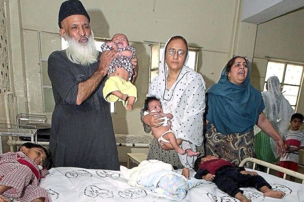

A life dedicated to humanity

A simple life lived for humanity
Abdul Sattar Edhi was born on 28 February 1928 in Bantva, Gujarat, in British India. From an early age, his mother taught him the importance of love, compassion, and caring for others. These values became an important part of his life and later shaped his dedication to humanitarian work. Edhi believed that faith should be demonstrated through actions and helping people rather than through words alone.
Abdul Sattar Edhi devoted his life to helping poor and vulnerable people. He established the Edhi Foundation, which grew from his personal efforts into a large welfare organization serving people across Pakistan. He was known for his simple way of living and for putting humanitarian service before personal comfort. Despite the scale of his work, he chose to live modestly and did not take a salary from the organization.
The Edhi Foundation expanded its services as it received support from private donors. It provided assistance without discrimination based on a person's religion, ethnicity, or social status. Its work included emergency ambulance services, orphanages, shelters, clinics, nursing homes, and rehabilitation centres. The organization also supported abandoned children, women in need, and people requiring medical or social assistance

Edhi's humanitarian work was not limited to Pakistan. The foundation carried out relief activities in different parts of the world and responded to people affected by disasters and humanitarian crises. Its services also included emergency assistance and support for communities facing difficult circumstances. Through this work, Edhi developed a welfare system that depended largely on donations and the efforts of volunteers and staff.
Bilquis Edhi played an important role alongside her husband. She worked with the foundation and was particularly involved in its maternity services and the care and adoption of abandoned babies. Together, Abdul Sattar and Bilquis Edhi helped build an organization that provided care to people who had little or no support. Their work became an important part of Edhi's lasting humanitarian legacy.
"No religion is higher than humanity."
Abdul Sattar Edhi left behind a lasting humanitarian legacy through the Edhi Foundation. His work provided essential services to people in need, including emergency ambulances, orphanages, shelters, clinics, nursing homes, and rehabilitation centres. The foundation's services were offered to people regardless of their ethnicity, religion, or social status.
His legacy also continued through the people who worked alongside him, including his wife Bilquis Edhi and his family. The foundation continued its welfare activities after his death, carrying forward the humanitarian work that Edhi had devoted his life to building.
Edhi's simple lifestyle, commitment to helping vulnerable people, and dedication to humanitarian service made his life widely respected. His work continues to be remembered for its contribution to welfare and humanitarian service in Pakistan and through the foundation's relief activities in other parts of the world.